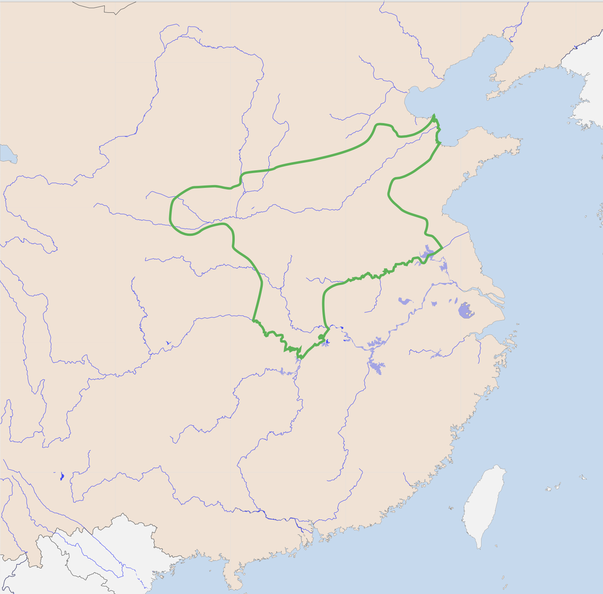

Humans use stone tools for hunting and farming
Cheng Tang became the first Shang king in 1675BC. He overthrew King Jie of the Xia dynasty to take his place on the throne. The Shang ruled for a whopping 500 years and they were awesome craftsmen.
The Shang were located near the Yellow River valley in Northern China. I've noticed that all of the civilizations we've studied are built around rivers. This is because they used the water to drink, farm and travel.
The Shang Dynasty was a Bronze Age civilization. Archaelogists have found many bronze artefacts. Now you might be wondering "why didn't they use copper or steel?" Well, bronze is actually copper mixed with tin; it is much harder than pure copper. Steel was not even invented yet! The Shang were also well known for other crafts from writing to jade sculptures!
King Zhou (a.k.a.Di Xin) was a bad king because he filled his pond with alcahol and got drunk and hang meat from the trees. He always thought of cruel and unusual punishments just for entertainment. The surounding The Shang Dynasty (The Zhou Dynasty) Wu Ding was angry and he ordered his armmy to kill the shang king; but instead of fighting for the king, they surendered. You might be wondering; why did they do that? That is because Zhou was cruel so Zhou locked himself in his palace and burned it to the grouned.
The name of the last Shang king was 商帝辛 (Shang Di Xin). Xin means 'suffer'. He got that name not because he suffered but the people he ruled suffered.